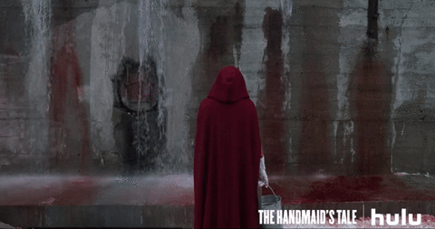

O Conto da Aia é uma série inspirada nos livros best seller de Margaret Atwood, The Handmaid's Tale. A produção conta a história de uma sociedade distópica onde uma nova fé toma
controle sobre o que era, anteriormente, os Estados Unidos da América. A personagem principal é June, uma aia que vive sob o teto de um casal de líderes do novo governo. A série, apesar de
relativamente nova, é extremamente bem aclamada, já tendo vencido 8 Emmys e dois Globos de Ouro, incluindo o de Melhor Atriz em Série Dramática para a protagonista interpretada por Elisabeth Moss e
o de Melhor Série Dramática.

O Conto da Aia é uma série inspirada nos livros best seller de Margaret Atwood, The Handmaid's Tale. A produção conta a história de uma sociedade distópica onde uma nova fé toma controle sobre o que era, anteriormente, os Estados Unidos da América. A personagem principal é June, uma aia que vive sob o teto de um casal de líderes do novo governo. A série, apesar de relativamente nova, é extremamente bem aclamada, já tendo vencido 8 Emmys e dois Globos de Ouro, incluindo o de Melhor Atriz em Série Dramática para a protagonista interpretada por Elisabeth Moss e o de Melhor Série Dramática.
• Número de temporadas: 3 Temporadas
• Emissora: Hulu
• Onde Assistir: Disponível na Hulu Video e no Globoplay
Como Defender um Assassino é uma série da mesma diretora de Greys Anatomy, Shonda Rhymes. Ela conta a história de Annalise Keating, professora de Direito Penal na universidade de Middleton. A série estuda seu comportamento em volta de seus cinco alunos
de maior destaque. Quando em uma noite fatídica os seis acabam por se envolver em um assassinato, todos precisam trabalhar juntos para esconder as evidências e não serem descobertos pelas autoridades
que investigam o crime cuidadosamente, antes que tudo acabe se tornando uma enorme bola de neve. A série também é muito bem aclamada pela crítica e rendeu um Emmy a vencedora do oscar e destaque do elenco, Viola Davis.
Como Defender um Assassino é uma série da mesma diretora de Greys Anatomy, Shonda Rhymes. Ela conta a história de Annalise Keating, professora de Direito Penal na universidade de Middleton. A série estuda seu comportamento em volta de seus cinco alunos de maior destaque. Quando em uma noite fatídica os seis acabam por se envolver em um assassinato, todos precisam trabalhar juntos para esconder as evidências e não serem descobertos pelas autoridades que investigam o crime cuidadosamente, antes que tudo acabe se tornando uma enorme bola de neve. A série também é muito bem aclamada pela crítica e rendeu um Emmy a vencedora do oscar e destaque do elenco, Viola Davis.
• Número de temporadas: 6 Temporadas
• Emissora: ABC
• Onde Assistir: Disponível na Netflix
YOU é uma polêmica série original Netflix onde nem tudo é o que parece. Quando Guinevere Beck, uma jovem estudante conhece Joe, o simpático e tímido gerente de uma livraria,
os dois se envolvem rapidamente em um relacionamento romântico aparentemente perfeito. A verdadeira trama se inicia quando a paixão de Joe evolui de um amor inocente para uma obsessão perigosa.
A série utiliza de elementos narrativos inétidos e truques psicológicos para tornar a história cada vez mais imersiva a quem assiste.
YOU é uma polêmica série original Netflix onde nem tudo é o que parece. Quando Guinevere Beck, uma jovem estudante conhece Joe, o simpático e tímido gerente de uma livraria, os dois se envolvem rapidamente em um relacionamento romântico aparentemente perfeito. A verdadeira trama se inicia quando a paixão de Joe evolui de um amor inocente para uma obsessão perigosa. A série utiliza de elementos narrativos inétidos e truques psicológicos para tornar a história cada vez mais imersiva a quem assiste.
• Número de temporadas: 2 Temporadas
• Emissora: Original Netflix
• Onde Assistir: Disponível na Netflix